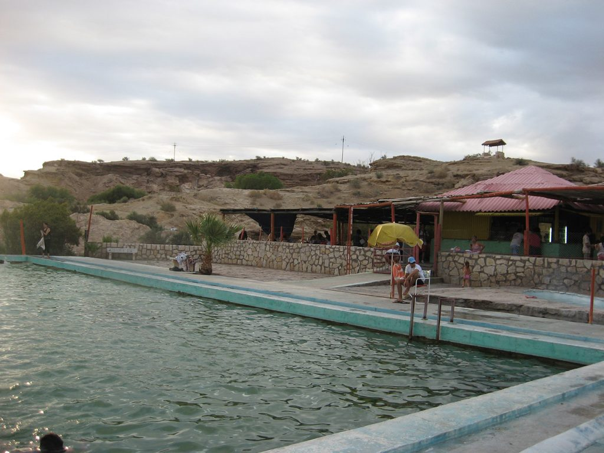
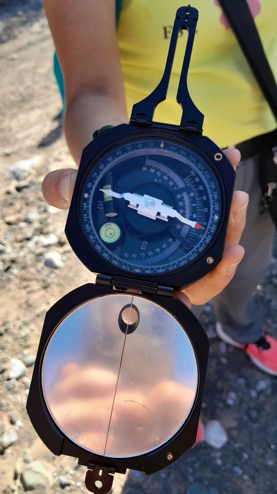

¿Cuál es la mejor epoca para visitar La Laja?
La mejor época para visitar La Laja, ubicada en la provincia de San Juan, es durante la primavera (septiembre-noviembre) y el otoño (abril-junio), cuando las temperaturas son más templadas y agradables para hacer recorridos. El verano puede ser excesivamente caluroso para visitar el Valle de la Luna (Ischigualasto), que está en la zona, mientras que el invierno puede ser muy frío.

¿Qué ropa usar para visitar el Cerro Blanco?
Para visitar el Cerro Blanco, es clave vestirse en capas para adaptarse a los cambios de temperatura. Usa un pantalón largo de trekking o deportivo, un calzado con buen agarre, y una remera o camiseta de manga corta. Es fundamental llevar un buzo o campera liviana, ya que el clima puede volverse fresco o ventoso. Además, no olvides un sombrero, lentes de sol y protector solar para protegerte del sol intenso de San Juan.

¿Qué medidas de seguridad tomar para un viaje a Talacasto?
Para un viaje seguro, avisa a alguien de tu itinerario y el horario de regreso. Lleva suficiente agua (al menos 2 litros por persona), comida, un botiquín de primeros auxilios y tu teléfono con batería. No te desvíes de los senderos conocidos, ya que la zona puede ser escarpada. Considera contratar un guía local que conozca el terreno y no realices el recorrido solo. Siempre presta atención al clima, especialmente a las tormentas que pueden formarse por la tarde.